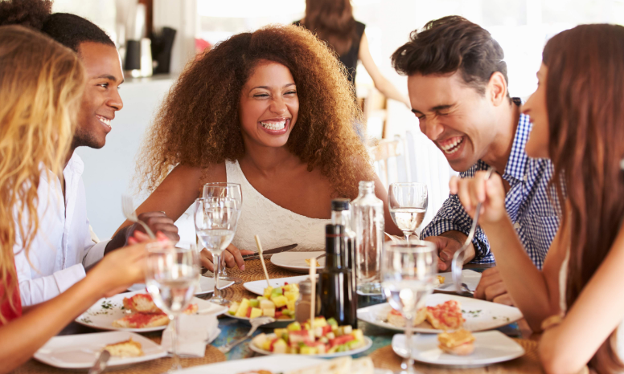
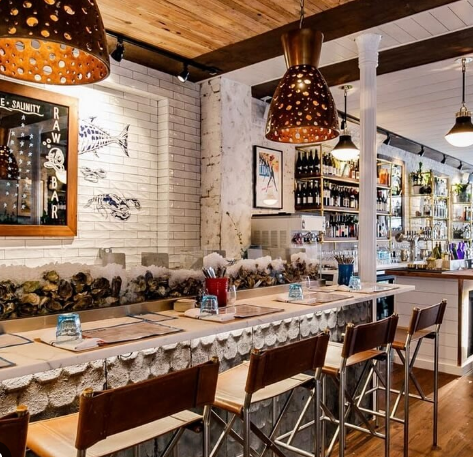
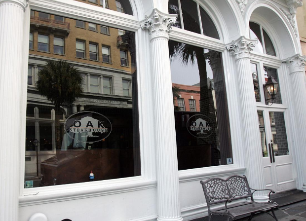

Biscuit Counter
476½ King Street
- Scratch biscuits since 2005
- Tiny counter, grab and go
- Order ahead in the app
- Second spot in the City Market
Menu
$8–$15 Per Person
Every visitor hears the same five restaurant names before they've booked a flight. Those places earned it. But the meals locals actually plan their week around tend to sit a few blocks off King Street or across the bridge, with a better story and no three-week reservation window.
This is where we send people who ask what to eat off the postcard route. It runs from a biscuit counter on Upper King down to Broad Street, then over the Ravenel to Mount Pleasant for supper and a sunset on Shem Creek.

The shop on Upper King is famously narrow, there's no place to sit, and the line still runs out the door on Saturday mornings. Callie's has been making biscuits by hand since 2005, and the counter turns them into sandwiches stuffed with pimento cheese, country ham or hot honey chicken. Skip the wait by ordering ahead in their app, then eat on the walk down King Street.
Order thisa country ham biscuit, still warm enough to fog the bag.
A corner restaurant on Coming Street with about 40 seats, no reservations, and a menu built daily around what local fishermen brought in. The national press has found it, but it still feels like a neighborhood spot: a small room, a raw bar, and plates like smoked fish curry and chili garlic shrimp that change with the catch. The secret is timing. Skip a late lunch and get there when the doors open around 5pm, or plan on a wait.

Order thiswhatever the whole fish is that night, plus the chili garlic shrimp.

Oak sits in a historic building on Broad Street, a few blocks from the King Street crowds. It's a steakhouse in the classic sense, with a quiet room, low light and a wine list worth asking about, minus the velvet-rope routine some of the city's splurge spots lean on. This is the one place on the list worth a reservation and a dressier outfit.
Order thisthe bone-in ribeye, and let the server pick the glass.
Across the bridge on Coleman Boulevard, Page's Okra Grill has been cooking Lowcountry comfort food for Mount Pleasant since 2006. It's family-owned, the recipes are handed down, and the menu makes no apology for it: fried green tomatoes, scratch biscuits and shrimp and grits that have been on national TV. It serves breakfast, lunch and dinner every day, plus weekend brunch, and it books through OpenTable, which helps with a group.
Order thisAshleigh's shrimp and grits, the dish that put the place on the map.
Shem Creek has a whole row of waterfront restaurants, but Red's Ice House on Church Street is the one locals linger at. The building really was the icehouse for the shrimp boats. Now it's layers of weathered decks and a rooftop crow's nest where boats idle past close enough to wave at, and dolphins sometimes surface in the creek. It isn't fancy and doesn't try to be, which is the whole appeal at sunset.

Order thispeel-and-eat shrimp, a cold beer and a seat facing the water.
Start early at Callie's before the line builds, then wander Upper King. Put your name down at Chubby Fish when it opens for dinner, and save Oak for a slower, dressier night later in the trip. Give one afternoon to Mount Pleasant: a late lunch at Page's, then drift to Red's in time for the sun to drop over Shem Creek.
Only Oak and Page's are worth booking ahead. The rest just need decent timing.
Hours and menus change, so check before you make the trip. Every pick is our own, and no business pays to be listed.
For brunch spots, oyster bars, rooftops and the big celebration dinners, see our Charleston restaurant guide and the eat-and-drink section of the main bachelorette guide. Spending a day at the beach? The Folly Beach and Isle of Palms guides cover the island food scenes, and the Isle of Palms page lists more Shem Creek spots.
None of these places needs a wristband or a wedding photographer to prove it's good. Go a little early, sit by the water when you can, and order whatever the kitchen is proudest of that day. Got a hidden spot we should add? Send it our way.